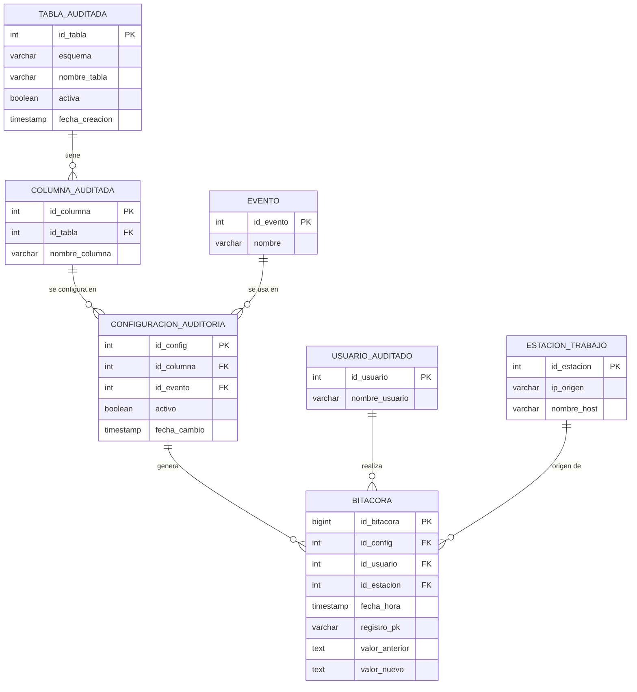

Universidad Mariano Gálvez de Guatemala
Facultad de Ingeniería en Sistemas de Información y Ciencias de la Computación
Base de Datos 1
Sistema de auditoría automatizado
Documentación técnica
Estudiante: ______________________
Carné: ______________________
Octubre de 2026
AutoAudit es un sistema hecho en PostgreSQL que guarda los cambios (insert, update y delete) que se hacen en las tablas de una base de datos. El administrador escoge qué tablas, qué columnas y qué eventos quiere vigilar, y el sistema crea solo los triggers necesarios. Cada cambio se guarda en una tabla llamada bitacora con el valor anterior, el valor nuevo, el usuario, la fecha y la IP de donde se hizo.
Incluye una interfaz web (Python y Flask) para configurar y consultar. Todo el sistema vive en un esquema llamado auditoria, así no se mezcla con las tablas del usuario.

| Columna | Tipo | Restricción | Descripción |
|---|---|---|---|
| id_tabla | SERIAL | PK | Identificador |
| esquema | VARCHAR(63) | NOT NULL | Esquema de la tabla (ej. public) |
| nombre_tabla | VARCHAR(63) | NOT NULL, UNIQUE con esquema | Nombre de la tabla |
| activa | BOOLEAN | DEFAULT TRUE | Si tiene trigger activo |
| fecha_creacion | TIMESTAMP | DEFAULT now() | Cuándo se agregó |
| Columna | Tipo | Restricción | Descripción |
|---|---|---|---|
| id_columna | SERIAL | PK | Identificador |
| id_tabla | INT | FK a tabla_auditada | Tabla a la que pertenece |
| nombre_columna | VARCHAR(63) | NOT NULL, UNIQUE con id_tabla | Nombre de la columna |
| Columna | Tipo | Restricción | Descripción |
|---|---|---|---|
| id_evento | SERIAL | PK | Identificador |
| nombre | VARCHAR(10) | UNIQUE, CHECK (INSERT, UPDATE, DELETE) | Nombre del evento |
| Columna | Tipo | Restricción | Descripción |
|---|---|---|---|
| id_config | SERIAL | PK | Identificador |
| id_columna | INT | FK a columna_auditada | Columna que se audita |
| id_evento | INT | FK a evento | Evento que se audita |
| activo | BOOLEAN | DEFAULT TRUE | Si está encendida o apagada |
| fecha_cambio | TIMESTAMP | DEFAULT now() | Última vez que se cambió |
| UNIQUE (id_columna, id_evento): no se repite la misma combinación. | |||
| Columna | Tipo | Restricción | Descripción |
|---|---|---|---|
| id_usuario | SERIAL | PK | Identificador |
| nombre_usuario | VARCHAR(63) | NOT NULL, UNIQUE | Usuario de PostgreSQL que hizo el cambio |
| Columna | Tipo | Restricción | Descripción |
|---|---|---|---|
| id_estacion | SERIAL | PK | Identificador |
| ip_origen | VARCHAR(45) | NOT NULL, UNIQUE | IP del cliente ('local' si es conexión por socket) |
| nombre_host | VARCHAR(100) | Nombre de la aplicación (application_name) |
| Columna | Tipo | Restricción | Descripción |
|---|---|---|---|
| id_bitacora | BIGSERIAL | PK | Identificador |
| id_config | INT | FK a configuracion_auditoria | Configuración usada |
| id_usuario | INT | FK a usuario_auditado | Quién hizo el cambio |
| id_estacion | INT | FK a estacion_trabajo | Desde dónde se hizo |
| fecha_hora | TIMESTAMP | DEFAULT now() | Fecha y hora del cambio |
| registro_pk | VARCHAR(200) | NOT NULL | Llave primaria del registro cambiado (si es compuesta va separada por guión) |
| valor_anterior | TEXT | Valor antes del cambio (NULL en insert) | |
| valor_nuevo | TEXT | Valor después del cambio (NULL en delete) |
Índices: idx_bitacora_usuario (id_usuario, fecha_hora) e idx_bitacora_config (id_config, fecha_hora) para que las consultas por usuario y por columna sean rápidas. Se guarda una fila por cada columna que cambió (estructura normalizada).
| Nombre | Para qué sirve |
|---|---|
| vw_tablas_disponibles | Tablas del diccionario de datos que se pueden auditar (information_schema.tables) |
| vw_columnas_disponibles | Columnas de esas tablas (information_schema.columns) |
| vw_llaves_primarias | Llaves primarias de cada tabla |
| vw_configuracion_actual | Muestra cómo está la auditoría ahora |
| vw_bitacora_detalle | Bitácora ya unida con usuario, tabla, columna y evento |
| agregar_configuracion(esquema, tabla, columna, evento) | Valida y guarda una configuración |
| desactivar_configuracion(esquema, tabla, columna, evento) | Apaga una configuración |
| generar_trigger(esquema, tabla) | Crea la función y el trigger de la tabla según la configuración |
| quitar_trigger(esquema, tabla) | Elimina el trigger de la tabla |
| auditar_tabla(esquema, tabla, columnas, eventos) | Atajo: configura y genera el trigger en un solo paso |
| historial_por_usuario(usuario, desde, hasta) | Cambios hechos por un usuario |
| historial_por_columna(esquema, tabla, columna, desde, hasta) | Cambios de una columna |
| es_admin() / validar_admin() | Revisan que el usuario sea administrador |
| obtener_usuario() / obtener_estacion() | Buscan o crean el usuario y la estación del cambio |
Se debe entrar con un usuario que sea superusuario o miembro del rol auditoria_admin.
SELECT * FROM auditoria.vw_tablas_disponibles; SELECT * FROM auditoria.vw_columnas_disponibles WHERE nombre_tabla = 'cliente';
Forma rápida (configura y crea el trigger):
SELECT auditoria.auditar_tabla('public', 'cliente',
ARRAY['nombre','correo','saldo'],
ARRAY['INSERT','UPDATE','DELETE']);
Si no se mandan columnas se auditan todas; si no se mandan eventos se usan los tres.
Forma paso a paso:
SELECT auditoria.agregar_configuracion('public', 'cliente', 'saldo', 'UPDATE');
SELECT auditoria.generar_trigger('public', 'cliente');
Después de cualquier cambio hay que volver a generar el trigger:
SELECT auditoria.desactivar_configuracion('public', 'cliente', 'correo', 'UPDATE');
SELECT auditoria.generar_trigger('public', 'cliente');
SELECT auditoria.quitar_trigger('public', 'cliente');
SELECT * FROM auditoria.historial_por_usuario('postgres');
SELECT * FROM auditoria.historial_por_usuario('postgres', '2026-10-01', '2026-10-31');
SELECT * FROM auditoria.historial_por_columna('public', 'cliente', 'saldo');
psql -d mi_bd -v usuario=postgres -v esquema=public -v tabla=cliente -v columna=saldo -f sql/09_exportar.sql
trg_audit_esquema_tabla).Ubuntu 26.04 LTS y PostgreSQL 18 (se probó también en PostgreSQL 16). Se necesita un usuario con permisos para crear bases de datos.
sudo apt install postgresql sudo -u postgres psql
git clone https://github.com/balvaradod/AutoAudit.git cd AutoAudit chmod +x instalar.sh ./instalar.sh autoaudit_bd
El script instalar.sh se ejecuta con el usuario normal (sin poner sudo adelante); por dentro usa sudo para entrar como el usuario postgres. Crea la base y ejecuta en orden:
| Archivo | Contenido |
|---|---|
| 01_estructura.sql | Esquema, tablas, índices, rol y seguridad |
| 02_diccionario.sql | Consultas al diccionario de datos |
| 03_configuracion.sql | Funciones de configuración |
| 04_generador_triggers.sql | Generador dinámico de triggers |
| 05_consultas.sql | Consultas de historial |
| 06_datos_prueba.sql | Tabla de ejemplo (cliente) |
| 07_pruebas.sql | Pruebas funcionales |
| 08_rendimiento.sql | Prueba de rendimiento |
| 09_exportar.sql | Exportar reportes a CSV |
Para correr los ejemplos y las pruebas:
cat sql/06_datos_prueba.sql sql/07_pruebas.sql | sudo -u postgres psql -d autoaudit_bd cat sql/08_rendimiento.sql | sudo -u postgres psql -d autoaudit_bd
Cuando se ejecuta generar_trigger el sistema: (1) valida que la tabla exista y tenga llave primaria, (2) lee las configuraciones activas, (3) arma el código de una función en PL/pgSQL con un bloque por cada columna y evento, (4) crea la función con EXECUTE, (5) borra el trigger anterior si había y crea un trigger AFTER FOR EACH ROW solo con los eventos configurados. Si algo falla se muestra un error con el nombre de la tabla. La función devuelve el código SQL que generó.
Ejemplo del trigger generado:
CREATE TRIGGER trg_audit_public_cliente AFTER INSERT OR UPDATE OR DELETE ON public.cliente FOR EACH ROW EXECUTE FUNCTION auditoria.fn_audit_public_cliente();
auditoria_admin o superusuarios pueden configurar (se revisa con validar_admin()).auditoria_admin tiene SELECT).Para configurar la auditoría y consultar el historial sin escribir SQL se hizo una interfaz web con Python (Flask). Está en la carpeta interfaz/ y usa las mismas funciones y vistas SQL de los scripts; no tiene lógica de auditoría propia.
| Pantalla | Qué hace |
|---|---|
| Iniciar sesión | Entra con un usuario y contraseña de PostgreSQL. Así la base de datos revisa si es administrador y los cambios quedan a nombre de ese usuario. |
| Configurar auditoría | Lista las tablas del diccionario de datos, muestra sus columnas con casillas por INSERT, UPDATE y DELETE, y al guardar genera el trigger y muestra el código SQL creado. También permite desactivar la auditoría de la tabla. |
| Configuración actual | Muestra qué tablas tienen trigger, con qué columnas y eventos. |
| Historial | Busca cambios por usuario o por columna, con fechas opcionales, en orden cronológico, y los exporta a CSV. |
Primero se debe tener instalada la base de datos (sección 5). Luego:
sudo -u postgres psql -c "ALTER USER postgres PASSWORD 'una_clave';" sudo apt install python3 python3-venv cd AutoAudit/interfaz python3 -m venv venv source venv/bin/activate pip install -r requirements.txt python3 app.py
Después se abre http://localhost:5000 en el navegador. Datos de entrada: servidor localhost, puerto 5432, base autoaudit_bd, usuario postgres y la contraseña que se puso arriba. Para cerrar el programa se presiona Ctrl+C en la terminal.
Un usuario que no sea administrador puede iniciar sesión pero PostgreSQL le niega los permisos y la pantalla muestra el error.
| # | Prueba | Resultado |
|---|---|---|
| 1 | INSERT de un cliente: se registran 3 filas (nombre, correo, saldo) | OK |
| 2 | UPDATE de saldo: se guarda 100.00 como anterior y 250.50 como nuevo, y solo la columna que cambió | OK |
| 3 | DELETE del cliente: el registro se borra pero la bitácora conserva sus datos | OK |
| 4 | Intentar modificar la bitácora da error | OK |
| 5 | Tabla, columna o evento que no existen son rechazados | OK |
| 6 | Desactivar una configuración y regenerar el trigger: deja de registrar esa columna | OK |
| 7 | Consultas por usuario y por columna devuelven el historial | OK |
| 8 | Un usuario sin permisos no puede configurar ni escribir en la bitácora | OK |
| 9 | Interfaz web: iniciar sesión, listar tablas, guardar configuración (genera el trigger), ver configuración, buscar historial por usuario y por columna, exportar CSV y desactivar la auditoría | OK |
| 10 | Interfaz web: sin sesión redirige al login, contraseña incorrecta muestra error, usuario sin permisos recibe el error de PostgreSQL | OK |
Se insertaron filas en una tabla de 3 columnas, primero sin auditoría y luego auditando 2 columnas (INSERT, UPDATE, DELETE). Resultados en una máquina virtual de pruebas:
| Filas insertadas | Sin auditoría (seg) | Con auditoría (seg) | Veces más lento |
|---|---|---|---|
| 1,000 | 0.002 | 0.053 | 26.5 |
| 10,000 | 0.015 | 0.494 | 32.9 |
| 50,000 | 0.083 | 2.654 | 32.0 |
| 100,000 | 0.162 | 5.037 | 31.1 |
Conclusiones: el tiempo crece de forma lineal con el número de filas, o sea que no empeora con el volumen. El costo es de aproximadamente 0.05 milisegundos por fila auditada, que para operaciones normales (una o pocas filas) no se nota. En cargas masivas sí se nota, porque por cada fila se escriben varias filas en la bitácora (una por columna). Con 322,010 filas en la bitácora, la consulta del historial de un usuario tardó alrededor de 1.4 segundos.
Link del repositorio: https://github.com/balvaradod/AutoAudit